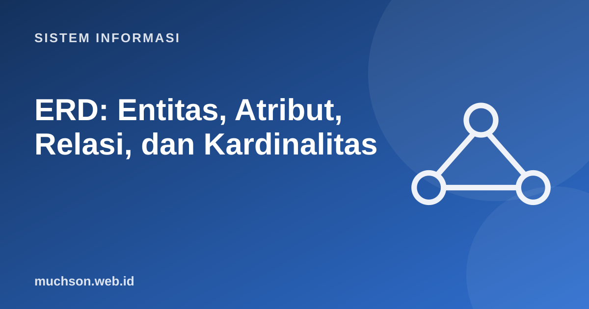

Beranda › Artikel › Sistem Informasi
Sistem InformasiERD: Entitas, Atribut, Relasi, dan Kardinalitas
Sebelum membuat tabel, kita perlu memahami data apa yang ada dan bagaimana hubungannya. ERD adalah alat standar untuk itu. Diagram yang baik membuat aturan bisnis terlihat: satu dosen mengajar banyak kelas, satu mahasiswa mengambil banyak mata kuliah, dan sebaliknya.
Sebaiknya sudah paham: analisis kebutuhan

Setelah membaca dan mencoba materi ini, Anda mampu:
- mengidentifikasi entitas, atribut, dan kunci dari deskripsi kebutuhan
- menggambar relasi dengan kardinalitas yang benar
- menyelesaikan relasi banyak-ke-banyak dengan entitas asosiatif
- mengubah ERD menjadi skema tabel relasional
- mengenali kesalahan pemodelan umum
Unsur ERD
| Unsur | Arti | Contoh |
|---|---|---|
| Entitas | Sesuatu yang datanya perlu disimpan | Mahasiswa, Dosen, MataKuliah |
| Atribut | Sifat sebuah entitas | nim, nama, tanggal_lahir |
| Kunci primer (PK) | Atribut yang mengidentifikasi satu baris secara unik | nim |
| Kunci asing (FK) | Atribut yang merujuk kunci primer entitas lain | kode_dosen pada MataKuliah |
| Relasi | Hubungan antar entitas | Dosen mengajar MataKuliah |
| Kardinalitas | Jumlah instans yang dapat berhubungan | 1:1, 1:N, M:N |
Membaca kardinalitas
Cara membaca: baca dua arah. "Satu dosen dapat mengajar berapa mata kuliah?" (banyak). "Satu mata kuliah diajar oleh berapa dosen?" (satu, pada kasus ini). Jawabannya menentukan kardinalitas.
Relasi banyak-ke-banyak harus dipecah
Basis data relasional tidak dapat menyimpan M:N langsung dengan satu kolom kunci asing. Solusinya: entitas asosiatif (tabel perantara) yang menyimpan pasangan dan atribut milik hubungan itu sendiri, misalnya nilai.
Dari ERD ke tabel
| Relasi | Aturan konversi |
|---|---|
| 1:N | Letakkan kunci primer sisi "1" sebagai kunci asing di tabel sisi "N" |
| 1:1 | Letakkan kunci asing di salah satu tabel dan beri batas UNIQUE (atau gabungkan tabel) |
| M:N | Buat tabel asosiatif dengan dua kunci asing; gabungannya menjadi kunci primer |
| Atribut multinilai (mis. nomor telepon) | Pindahkan ke tabel tersendiri dengan kunci asing |
| Atribut turunan (mis. umur dari tanggal lahir) | Tidak disimpan; dihitung saat dibutuhkan |
import sqlite3
db = sqlite3.connect(":memory:")
db.execute("PRAGMA foreign_keys = ON")
db.executescript("""
CREATE TABLE mahasiswa (
nim TEXT PRIMARY KEY,
nama TEXT NOT NULL
);
CREATE TABLE mata_kuliah (
kode_mk TEXT PRIMARY KEY,
nama TEXT NOT NULL,
sks INTEGER NOT NULL CHECK (sks BETWEEN 1 AND 6)
);
CREATE TABLE krs (
nim TEXT NOT NULL REFERENCES mahasiswa(nim),
kode_mk TEXT NOT NULL REFERENCES mata_kuliah(kode_mk),
nilai TEXT,
PRIMARY KEY (nim, kode_mk)
);
""")
db.execute("INSERT INTO mahasiswa VALUES ('A01','Ani')")
db.execute("INSERT INTO mata_kuliah VALUES ('SI101','Sistem Informasi',3)")
db.execute("INSERT INTO krs VALUES ('A01','SI101','A')")
for sql in ["INSERT INTO krs VALUES ('A01','SI101','B')", # pasangan sama dua kali
"INSERT INTO krs VALUES ('Z99','SI101',NULL)", # mahasiswa tidak ada
"INSERT INTO mata_kuliah VALUES ('X1','Salah',9)"]: # melanggar CHECK
try:
db.execute(sql)
except sqlite3.IntegrityError as e:
print("ditolak:", e)ditolak: UNIQUE constraint failed: krs.nim, krs.kode_mk
ditolak: FOREIGN KEY constraint failed
ditolak: CHECK constraint failed: sks BETWEEN 1 AND 6
Kesalahan pemodelan yang sering terjadi
1. Rancang ERD untuk toko online dengan Pelanggan, Pesanan, Produk.
2. Mengapa harga_saat_beli disimpan di ItemPesanan, bukan hanya di Produk?
3. Apa jenis relasi antara Kendaraan dan Pemilik jika satu kendaraan hanya dimiliki satu orang pada satu waktu tetapi seseorang bisa memiliki banyak kendaraan?
4. Konversikan relasi 1:N Dosen–MataKuliah ke tabel.
- Entitas, atribut, kunci primer, kunci asing, relasi, kardinalitas.
- Baca kardinalitas dalam dua arah dan konfirmasi dengan pengguna.
- M:N dipecah dengan entitas asosiatif yang dapat menyimpan atribut hubungan.
- Basis data menegakkan aturan lewat PK, FK, UNIQUE, dan CHECK.
Tanya jawab
Apa beda notasi Chen dan Crow's Foot?
Mengapa tidak memakai nama sebagai kunci primer?
Apakah ERD sama dengan diagram kelas?
Referensi
- Ramez Elmasri dan Shamkant Navathe, Fundamentals of Database Systems (Pearson)
- Abraham Silberschatz, Henry Korth, S. Sudarshan, Database System Concepts (McGraw-Hill)
- Kenneth E. Kendall dan Julie E. Kendall, Systems Analysis and Design (Pearson)
- SQLite Documentation: SQL As Understood By SQLite